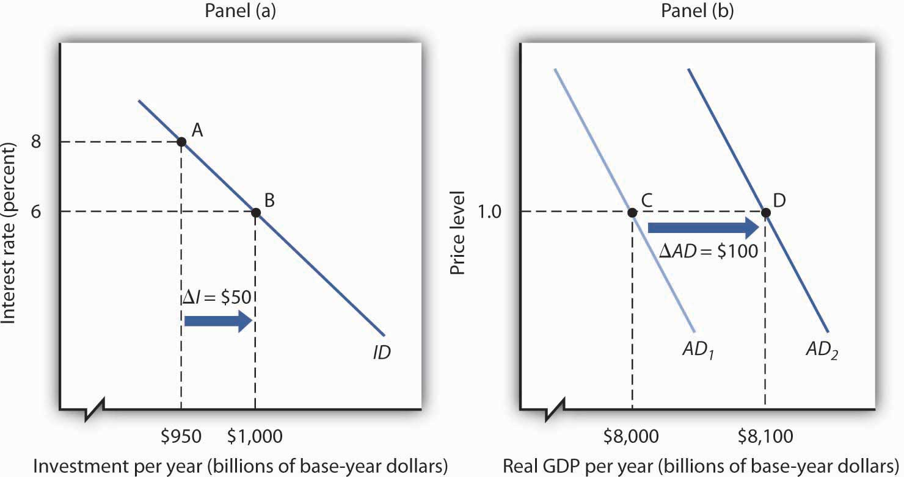

In the recession that began in late 2007 in the United States, the first main element of GDP that faltered was the part of investment called residential structures. When housing prices started falling in 2006, new home construction slowed down. In 2008, this sector had shrunk by more than 40% from where it had been just a few years earlier.
In 2008, the part of investment that reflects business spending on equipment ranging from computers to machines to trucks also turned down. The only major part of investment left standing was business spending on structures—factories, hospitals, office buildings, and such. In late 2008, firms around the world seemed to be trying to outdo each other in announcing cutbacks.
Among automakers, it was not just the Detroit 3 cutting back. Toyota announced an indefinite delay in building a Prius hybrid sedan plant in Mississippi.Kate Linebaugh, “Toyota Delays Mississippi Prius Factor Amid Slump,” Wall Street Journal, December 16, 2008, p. B1. Walgreen’s, which had been increasing drugstore locations by about 8% a year, said it would expand by only about 4% in 2009 and by less than 3% in 2010.Amy Merrick, “Walgreen to Cut Back on Opening New Stores,” Wall Street Journal, December 23, 2008, p. B1. Package carrier FedEx announced a 20% decline in capital spending, on top of suspending pension contributions and cutting salaries.Darren Shannon, “FedEx Takes More Measures to Offset Fiscal Uncertainty,” Aviation Daily, December 19, 2008, p. 6. Even hospitals began scaling back on construction.Reed Abelson, “Hurting for Business,” New York Times, November 7, 2008, p. B1.
Companies around the world were announcing similar cutbacks. Consumer electronics maker Sony announced is was not only closing plants but also not moving forward in constructing an LCD television plant in Slovakia.Bettina Wassener, “Sony to Cut 8,000 Workers and Shut Plants,” New York Times, December 10, 2008, p. B8. With the drop in oil prices, oil companies were also cancelling planned projects right and left.Steve LeVine, “Pullback in the Oil Patch,” Business Week, December 8, 2008, p. 60.
Choices about how much to invest must always be made in the face of uncertainty; firms cannot know what the marketplace has in store. Investment is a gamble; firms that make the gamble hope for a profitable payoff. And, if they are concerned that the payoff may not materialize, they will be quick to take the kinds of actions cited above—to slash investment spending.
Private investment plays an important role, not only in the short run, by influencing aggregate demand, but also in the long run, for it influences the rate at which the economy grows. That is, it influences long-run aggregate supply.
In this chapter, we will examine factors that determine investment by firms, and we will study its relationship to output in the short run and in the long run. One determinant of investment is public policy; we will examine the ways in which public policy affects investment.
Private firms are not the only source of investment; government agencies engage in investment as well. We examined the impact of the public sector on macroeconomic performance in the chapter devoted to fiscal policy. When we refer to “investment” in this chapter, we will be referring to investment carried out in the private sector.
How important is investment? Consider any job you have ever performed. Your productivity in that job was largely determined by the investment choices that had been made before you began to work. If you worked as a clerk in a store, the equipment used in collecting money from customers affected your productivity. It may have been a simple cash register, or a sophisticated computer terminal that scanned purchases and was linked to the store’s computer, which computed the store’s inventory and did an analysis of the store’s sales as you entered each sale. If you have worked for a lawn maintenance firm, the kind of equipment you had to work with influenced your productivity. You were more productive if you had the latest mulching power lawn mowers than if you struggled with a push mower. Whatever the work you might have done, the kind and quality of capital you had to work with strongly influenced your productivity. And that capital was available because investment choices had provided it.
Investment adds to the nation’s capital stock. We saw in the chapter on economic growth that an increase in capital shifts the aggregate production function outward, increases the demand for labor, and shifts the long-run aggregate supply curve to the right. Investment therefore affects the economy’s potential output and thus its standard of living in the long run.
Investment is a component of aggregate demand. Changes in investment shift the aggregate demand curve and thus change real GDP and the price level in the short run. An increase in investment shifts the aggregate demand curve to the right; a reduction shifts it to the left.
Additions to the stock of private capital are called Gross Private Domestic Investment (GPDI). GPDI includes four categories of investment:
Figure 29.1 "Components of Gross Private Domestic Investment, 1995–2011" shows the components of gross private domestic investment from 1995 through 2011. We see that producers’ equipment and software constitute the largest component of GPDI in the United States. Residential investment was the second largest component of GPDI for most of the period shown but it shrank considerably during the 2007–2009 recession and has yet to recover.
Figure 29.1 Components of Gross Private Domestic Investment, 1995–2011

This chart shows the levels of each of the four components of gross private domestic investment from 1995 through 2011. Nonresidential equipment and software is the largest component of GPDI and has shown the most substantial growth over the period.
Source: Bureau of Economic Analysis, NIPA Table 1.1.6 (revised February 29, 2012).
As capital is used, some of it wears out or becomes obsolete; it depreciates (the Commerce Department reports depreciation as “consumption of fixed capital”). Investment adds to the capital stock, and depreciation reduces it. Gross investment minus depreciation is net investment. If gross investment is greater than depreciation in any period, then net investment is positive and the capital stock increases. If gross investment is less than depreciation in any period, then net investment is negative and the capital stock declines.
In the official estimates of total output, gross investment (GPDI) minus depreciation equals net private domestic investment (NPDI). The value for NPDI in any period gives the amount by which the privately held stock of physical capital changed during that period.
Figure 29.2 "Gross Private Domestic Investment, Depreciation, and Net Private Domestic Investment, 1990–2011" reports the real values of GPDI, depreciation, and NPDI from 1990 to 2011. We see that the bulk of GPDI replaces capital that has been depreciated. Notice the sharp reductions in NPDI during the recessions of 1990–1991, 2001, and especially 2007–2009.
Figure 29.2 Gross Private Domestic Investment, Depreciation, and Net Private Domestic Investment, 1990–2011

The bulk of gross private domestic investment goes to the replacement of capital that has depreciated, as shown by the experience of the past two decades.
Source: Bureau of Economic Analysis, NIPA Table 5.2.6 (revised February 29, 2012).
Investment, measured as GPDI, is among the most volatile components of GDP. In percentage terms, year-to-year changes in GPDI are far greater than the year-to-year changes in consumption or government purchases. Net exports are also quite volatile, but they represent a much smaller share of GDP. Figure 29.3 "Changes in Components of Real GDP, 1990–2011" compares annual percentage changes in GPDI, personal consumption, and government purchases. Of course, a dollar change in investment will be a much larger change in percentage terms than a dollar change in consumption, which is the largest component of GDP. But compare investment and government purchases: their shares in GDP are comparable, but investment is clearly more volatile.
Figure 29.3 Changes in Components of Real GDP, 1990–2011

Annual percentage changes in real GPDI have been much greater than annual percentage changes in the real values of personal consumption or government purchases.
Source: Bureau of Economic Analysis, NIPA Table 1.1.1 (revised February 29, 2012).
Given that the aggregate demand curve shifts by an amount equal to the multiplier times an initial change in investment, the volatility of investment can cause real GDP to fluctuate in the short run. Downturns in investment may trigger recessions.
Earlier we used the production possibilities curve to illustrate how choices are made about investment, consumption, and saving. Because such choices are crucial to understanding how investment affects living standards, it will be useful to reexamine them here.
Figure 29.4 "The Choice between Consumption and Investment" shows a production possibilities curve for an economy that can produce two kinds of goods: consumption goods and investment goods. An economy operating at point A on PPC1 is using its factors of production fully and efficiently. It is producing CA units of consumption goods and IA units of investment each period. Suppose that depreciation equals IA, so that the quantity of investment each period is just sufficient to replace depreciated capital; net investment equals zero. If there is no change in the labor force, in natural resources, or in technology, the production possibilities curve will remain fixed at PPC1.
Figure 29.4 The Choice between Consumption and Investment

A society with production possibilities curve PPC1 could choose to produce at point A, producing CA consumption goods and investment of IA. If depreciation equals IA, then net investment is zero, and the production possibilities curve will not shift, assuming no other determinants of the curve change. By cutting its production of consumption goods and increasing investment to IB, however, the society can, over time, shift its production possibilities curve out to PPC2, making it possible to enjoy greater production of consumption goods in the future.
Now suppose decision makers in this economy decide to sacrifice the production of some consumption goods in favor of greater investment. The economy moves to point B on PPC1. Production of consumption goods falls to CB, and investment rises to IB. Assuming depreciation remains IA, net investment is now positive. As the nation’s capital stock increases, the production possibilities curve shifts outward to PPC2. Once that shift occurs, it will be possible to select a point such as D on the new production possibilities curve. At this point, consumption equals CD, and investment equals ID. By sacrificing consumption early on, the society is able to increase both its consumption and investment in the future. That early reduction in consumption requires an increase in saving.
We see that a movement along the production possibilities curve in the direction of the production of more investment goods and fewer consumption goods allows the production of more of both types of goods in the future.
Which of the following would be counted as gross private domestic investment?

Net private domestic investment (NPDI) has been negative during only three periods in the last 80 years. During one period, World War II, massive defense spending forced cutbacks in private sector spending. (Recall that government investment is not counted as part of net private domestic investment in the official accounts; production of defense capital thus is not reflected in these figures.) The second period in which NPDI was negative was the Great Depression.
Aggregate demand plunged during the first four years of the Depression. As firms cut their output in response to reductions in demand, their need for capital fell as well. They reduced their capital by holding gross private domestic investment below depreciation beginning in 1931. That produced negative net private domestic investment; it remained negative until 1936 and became negative again in 1938. In all, firms reduced the private capital stock by more than $529.5 billion (in 2007 dollars) during the period.

A third—very brief and very small—encounter with negative net private domestic investment occurred in 2009, when it fell by $1 billion (in 2005 dollars).
The two graphs in this case present a contrast between the Great Depression and the Great Recession. The Great Recession was bad, but the Great Depression was ever so much worse.

We will see in this section that interest rates play a key role in the determination of the desired stock of capital and thus of investment. Because investment is a process through which capital is increased in one period for use in future periods, expectations play an important role in investment as well.
Capital is one factor of production, along with labor and natural resources. A decision to invest is a decision to use more capital in producing goods and services. Factors that affect firms’ choices in the mix of capital, labor, and natural resources will affect investment as well.
We will also see in this section that public policy affects investment. Some investment is done by government agencies as they add to the public stock of capital. In addition, the tax and regulatory policies chosen by the public sector can affect the investment choices of private firms and individuals.
We often hear reports that low interest rates have stimulated housing construction or that high rates have reduced it. Such reports imply a negative relationship between interest rates and investment in residential structures. This relationship applies to all forms of investment: higher interest rates tend to reduce the quantity of investment, while lower interest rates increase it.
To see the relationship between interest rates and investment, suppose you own a small factory and are considering the installation of a solar energy collection system to heat your building. You have determined that the cost of installing the system would be $10,000 and that the system would lower your energy bills by $1,000 per year. To simplify the example, we shall suppose that these savings will continue forever and that the system will never need repair or maintenance. Thus, we need to consider only the $10,000 purchase price and the $1,000 annual savings.
If the system is installed, it will be an addition to the capital stock and will therefore be counted as investment. Should you purchase the system?
Suppose that your business already has the $10,000 on hand. You are considering whether to use the money for the solar energy system or for the purchase of a bond. Your decision to purchase the system or the bond will depend on the interest rate you could earn on the bond.
Putting $10,000 into the solar energy system generates an effective income of $1,000 per year—the saving the system will produce. That is a return of 10% per year. Suppose the bond yields a 12% annual interest. It thus generates interest income of $1,200 per year, enough to pay the $1,000 in heating bills and have $200 left over. At an interest rate of 12%, the bond is the better purchase. If, however, the interest rate on bonds were 8%, then the solar energy system would yield a higher income than the bond. At interest rates below 10%, you will invest in the solar energy system. At interest rates above 10%, you will buy a bond instead. At an interest rate of precisely 10%, it is a toss-up.
If you do not have the $10,000 on hand and would need to borrow the money to purchase the solar energy system, the interest rate still governs your decision. At interest rates below 10%, it makes sense to borrow the money and invest in the system. At interest rates above 10%, it does not.
In effect, the interest rate represents the opportunity cost of putting funds into the solar energy system rather than into a bond. The cost of putting the $10,000 into the system is the interest you would forgo by not purchasing the bond.
At any one time, millions of investment choices hinge on the interest rate. Each decision to invest will make sense at some interest rates but not at others. The higher the interest rate, the fewer potential investments will be justified; the lower the interest rate, the greater the number that will be justified. There is thus a negative relationship between the interest rate and the level of investment.
Figure 29.5 "The Investment Demand Curve" shows an investment demand curveA curve that shows the quantity of investment demanded at each interest rate, with all other determinants of investment unchanged. for the economy—a curve that shows the quantity of investment demanded at each interest rate, with all other determinants of investment unchanged. At an interest rate of 8%, the level of investment is $950 billion per year at point A. At a lower interest rate of 6%, the investment demand curve shows that the quantity of investment demanded will rise to $1,000 billion per year at point B. A reduction in the interest rate thus causes a movement along the investment demand curve.
Figure 29.5 The Investment Demand Curve

The investment demand curve shows the volume of investment spending per year at each interest rate, assuming all other determinants of investment are unchanged. The curve shows that as the interest rate falls, the level of investment per year rises. A reduction in the interest rate from 8% to 6%, for example, would increase investment from $950 billion to $1,000 billion per year, all other determinants of investment unchanged.
To make sense of the relationship between interest rates and investment, you must remember that investment is an addition to capital, and that capital is something that has been produced in order to produce other goods and services. A bond is not capital. The purchase of a bond is not an investment. We can thus think of purchasing bonds as a financial investment—that is, as an alternative to investment. The more attractive bonds are (i.e., the higher their interest rate), the less attractive investment becomes. If we forget that investment is an addition to the capital stock and that the purchase of a bond is not investment, we can fall into the following kind of error: “Higher interest rates mean a greater return on bonds, so more people will purchase them. Higher interest rates will therefore lead to greater investment.” That is a mistake, of course, because the purchase of a bond is not an investment. Higher interest rates increase the opportunity cost of using funds for investment. They reduce investment.
Perhaps the most important characteristic of the investment demand curve is not its negative slope, but rather the fact that it shifts often. Although investment certainly responds to changes in interest rates, changes in other factors appear to play a more important role in driving investment choices.
This section examines eight additional determinants of investment demand: expectations, the level of economic activity, the stock of capital, capacity utilization, the cost of capital goods, other factor costs, technological change, and public policy. A change in any of these can shift the investment demand curve.
A change in the capital stock changes future production capacity. Therefore, plans to change the capital stock depend crucially on expectations. A firm considers likely future sales; a student weighs prospects in different occupations and their required educational and training levels. As expectations change in a way that increases the expected return from investment, the investment demand curve shifts to the right. Similarly, expectations of reduced profitability shift the investment demand curve to the left.
Firms need capital to produce goods and services. An increase in the level of production is likely to boost demand for capital and thus lead to greater investment. Therefore, an increase in GDP is likely to shift the investment demand curve to the right.
To the extent that an increase in GDP boosts investment, the multiplier effect of an initial change in one or more components of aggregate demand will be enhanced. We have already seen that the increase in production that occurs with an initial increase in aggregate demand will increase household incomes, which will increase consumption, thus producing a further increase in aggregate demand. If the increase also induces firms to increase their investment, this multiplier effect will be even stronger.
The quantity of capital already in use affects the level of investment in two ways. First, because most investment replaces capital that has depreciated, a greater capital stock is likely to lead to more investment; there will be more capital to replace. But second, a greater capital stock can tend to reduce investment. That is because investment occurs to adjust the stock of capital to its desired level. Given that desired level, the amount of investment needed to reach it will be lower when the current capital stock is higher.
Suppose, for example, that real estate analysts expect that 100,000 homes will be needed in a particular community by 2010. That will create a boom in construction—and thus in investment—if the current number of houses is 50,000. But it will create hardly a ripple if there are now 99,980 homes.
How will these conflicting effects of a larger capital stock sort themselves out? Because most investment occurs to replace existing capital, a larger capital stock is likely to increase investment. But that larger capital stock will certainly act to reduce net investment. The more capital already in place, the less new capital will be required to reach a given level of capital that may be desired.
The capacity utilization rateA measure of the percentage of the capital stock in use. measures the percentage of the capital stock in use. Because capital generally requires downtime for maintenance and repairs, the measured capacity utilization rate typically falls below 100%. For example, the average manufacturing capacity utilization rate was 79.7% for the period from 1972 to 2007. In November 2008 it stood at 72.3.
If a large percentage of the current capital stock is being utilized, firms are more likely to increase investment than they would if a large percentage of the capital stock were sitting idle. During recessions, the capacity utilization rate tends to fall. The fact that firms have more idle capacity then depresses investment even further. During expansions, as the capacity utilization rate rises, firms wanting to produce more often must increase investment to do so.
The demand curve for investment shows the quantity of investment at each interest rate, all other things unchanged. A change in a variable held constant in drawing this curve shifts the curve. One of those variables is the cost of capital goods themselves. If, for example, the construction cost of new buildings rises, then the quantity of investment at any interest rate is likely to fall. The investment demand curve thus shifts to the left.
The $10,000 cost of the solar energy system in the example given earlier certainly affects a decision to purchase it. We saw that buying the system makes sense at interest rates below 10% and does not make sense at interest rates above 10%. If the system costs $5,000, then the interest return on the investment would be 20% (the annual saving of $1,000 divided by the $5,000 initial cost), and the investment would be undertaken at any interest rate below 20%.
Firms have a range of choices concerning how particular goods can be produced. A factory, for example, might use a sophisticated capital facility and relatively few workers, or it might use more workers and relatively less capital. The choice to use capital will be affected by the cost of the capital goods and the interest rate, but it will also be affected by the cost of labor. As labor costs rise, the demand for capital is likely to increase.
Our solar energy collector example suggests that energy costs influence the demand for capital as well. The assumption that the system would save $1,000 per year in energy costs must have been based on the prices of fuel oil, natural gas, and electricity. If these prices were higher, the savings from the solar energy system would be greater, increasing the demand for this form of capital.
The implementation of new technology often requires new capital. Changes in technology can thus increase the demand for capital. Advances in computer technology have encouraged massive investments in computers. The development of fiber-optic technology for transmitting signals has stimulated huge investments by telephone and cable television companies.
Public policy can have significant effects on the demand for capital. Such policies typically seek to affect the cost of capital to firms. The Kennedy administration introduced two such strategies in the early 1960s. One strategy, accelerated depreciation, allowed firms to depreciate capital assets over a very short period of time. They could report artificially high production costs in the first years of an asset’s life and thus report lower profits and pay lower taxes. Accelerated depreciation did not change the actual rate at which assets depreciated, of course, but it cut tax payments during the early years of the assets’ use and thus reduced the cost of holding capital.
The second strategy was the investment tax credit, which permitted a firm to reduce its tax liability by a percentage of its investment during a period. A firm acquiring new capital could subtract a fraction of its cost—10% under the Kennedy administration’s plan—from the taxes it owed the government. In effect, the government “paid” 10% of the cost of any new capital; the investment tax credit thus reduced the cost of capital for firms.
Though less direct, a third strategy for stimulating investment would be a reduction in taxes on corporate profits (called the corporate income tax). Greater after-tax profits mean that firms can retain a greater portion of any return on an investment.
A fourth measure to encourage greater capital accumulation is a capital gains tax rate that allows gains on assets held during a certain period to be taxed at a different rate than other income. When an asset such as a building is sold for more than its purchase price, the seller of the asset is said to have realized a capital gain. Such a gain could be taxed as income under the personal income tax. Alternatively, it could be taxed at a lower rate reserved exclusively for such gains. A lower capital gains tax rate makes assets subject to the tax more attractive. It thus increases the demand for capital. Congress reduced the capital gains tax rate from 28% to 20% in 1996 and reduced the required holding period in 1998. The Jobs and Growth Tax Relief Reconciliation Act of 2003 reduced the capital gains tax further to 15% and also reduced the tax rate on dividends from 38% to 15%. A proposal to eliminate capital gains taxation for smaller firms was considered but dropped before the stimulus bill of 2009 was enacted.
Accelerated depreciation, the investment tax credit, and lower taxes on corporate profits and capital gains all increase the demand for private physical capital. Public policy can also affect the demands for other forms of capital. The federal government subsidizes state and local government production of transportation, education, and many other facilities to encourage greater investment in public sector capital. For example, the federal government pays 90% of the cost of investment by local government in new buses for public transportation.
Show how the investment demand curve would be affected by each of the following:

The U.S. economy was expanding in 2004, but there was a feeling that it still was not functioning as well as it could, as job growth was rather sluggish. To try to spur growth, Congress, supported by President Bush, passed a law in 2004 called the American Jobs Creation Act that gave businesses a one-year special tax break on any profits accumulating overseas that were transferred to the United States. Such profits are called repatriated profits and were estimated at the time to be about $800 billion. For 2005, the tax rate on repatriated profits essentially fell from 25% to 5.25%.
Did the tax break have the desired effect on the economy? To some extent yes, though business also found other uses for the repatriated funds. There were 843 companies that repatriated $312 billion that qualified for the tax break. The Act thus generated about $18 billion in tax revenue, a higher level than had been expected. Some companies announced they were repatriating profits and continuing to downsize. For example, Colgate-Palmolive brought back $800 million and made known it was closing a third of its factories and eliminating 12% of its workforce. However, other companies’ plans seemed more in line with the objectives of the special tax break—to create jobs and spur investment.
For example, spokesman Chuck Mulloy of Intel, which repatriated over $6 billion, said the company was building a $3-billion wafer fabrication facility and spending $345 million on expanding existing facilities. “I can’t say dollar-for-dollar how much of the funding for those comes from off-shore cash,” but he felt that the repatriated funds were contributing to Intel’s overall investments. Spokeswoman Margaret Graham of Bausch and Lomb, which makes eye-care products and repatriated $805 million, said, “We plan to use that cash for capital expenditures, investment in research and development, and paying nonofficer compensation.”
Analysts are skeptical, though, that the repatriated profits really contributed to investment. The New York Times reported on one study that suggested it had not. Rather, the repatriated funds were used for other purposes, such as stock repurchases. The argument is that the companies made investments that they were planning to make and the repatriated funds essentially freed up funding for other purposes.
Sources: Timothy Aeppel, “Tax Break Brings Billion to U.S., But Impact on Hiring Is Unclear,” Wall Street Journal, October 5, 2005, p. A1; Lynnley Browning, “A One-Time Tax Break Saved 843 U.S. Corporations $265 Billion,” New York Times, June 24, 2008, p. C3.

We shall examine the impact of investment on the economy in the context of the model of aggregate demand and aggregate supply. Investment is a component of aggregate demand; changes in investment shift the aggregate demand curve by the amount of the initial change times the multiplier. Investment changes the capital stock; changes in the capital stock shift the production possibilities curve and the economy’s aggregate production function and thus shift the long- and short-run aggregate supply curves to the right or to the left.
In the short run, changes in investment cause aggregate demand to change. Consider, for example, the impact of a reduction in the interest rate, given the investment demand curve (ID). In Figure 29.6 "A Change in Investment and Aggregate Demand", Panel (a), which uses the investment demand curve introduced in Figure 29.5 "The Investment Demand Curve", a reduction in the interest rate from 8% to 6% increases investment by $50 billion per year. Assume that the multiplier is 2. With an increase in investment of $50 billion per year and a multiplier of 2, the aggregate demand curve shifts to the right by $100 billion to AD2 in Panel (b). The quantity of real GDP demanded at each price level thus increases. At a price level of 1.0, for example, the quantity of real GDP demanded rises from $8,000 billion to $8,100 billion per year.
Figure 29.6 A Change in Investment and Aggregate Demand
A reduction in the interest rate from 8% to 6% increases the level of investment by $50 billion per year in Panel (a). With a multiplier of 2, the aggregate demand curve shifts to the right by $100 billion in Panel (b). The total quantity of real GDP demanded increases at each price level. Here, for example, the quantity of real GDP demanded at a price level of 1.0 rises from $8,000 billion per year at point C to $8,100 billion per year at point D.
A reduction in investment would shift the aggregate demand curve to the left by an amount equal to the multiplier times the change in investment.
The relationship between investment and interest rates is one key to the effectiveness of monetary policy to the economy. When the Fed seeks to increase aggregate demand, it purchases bonds. That raises bond prices, reduces interest rates, and stimulates investment and aggregate demand as illustrated in Figure 29.6 "A Change in Investment and Aggregate Demand". When the Fed seeks to decrease aggregate demand, it sells bonds. That lowers bond prices, raises interest rates, and reduces investment and aggregate demand. The extent to which investment responds to a change in interest rates is a crucial factor in how effective monetary policy is.
Investment adds to the stock of capital, and the quantity of capital available to an economy is a crucial determinant of its productivity. Investment thus contributes to economic growth. We saw in Figure 29.4 "The Choice between Consumption and Investment" that an increase in an economy’s stock of capital shifts its production possibilities curve outward. (Recall from the chapter on economic growth that it also shifts the economy’s aggregate production function upward.) That also shifts its long-run aggregate supply curve to the right. At the same time, of course, an increase in investment affects aggregate demand, as we saw in Figure 29.6 "A Change in Investment and Aggregate Demand".
The text notes that rising investment shifts the aggregate demand curve to the right and at the same time shifts the long-run aggregate supply curve to the right by increasing the nation’s stock of physical and human capital. Show this simultaneous shifting in the two curves with three graphs. One graph should show growth in which the price level rises, one graph should show growth in which the price level remains unchanged, and another should show growth with the price level falling.
With consumer and export spending faltering in 2005, increased business investment spending seemed to be keeping the Australian economy afloat. “Corporate Australia is solidly behind the steering wheel of the Australian economy,” said Craig James, an economist for Commonwealth Securities, an Australian Internet securities brokerage firm. “The clear message from the latest investment survey is that corporate Australia is flush with cash and ready to spend,” he continued.
The data supported his conclusions. The level of investment spending in Australia on new buildings, plant, and equipment was 17% higher in 2005 than in 2004. Within the investment category, mining investment, spurred on by high prices for natural resources, was particularly strong.
Source: Scott Murdoch, “Equipment Investment Gives Boost to Economy,” Courier Mail (Queensland, Australia), September 2, 2005, Finance section, p. 35.
Panel (a) shows AD shifting by more than LRAS; the price level will rise in the long run.
Panel (b) shows AD and LRAS shifting by equal amounts; the price level will remain unchanged in the long run.
Panel (c) shows LRAS shifting by more than AD; the price level falls in the long run.
Investment is an addition to the capital stock. Investment may occur as a net addition to capital or as a replacement of depreciated capital. The bulk of investment spending in the United States falls into the latter category. Investment is a highly volatile component of GDP.
The decision to save is linked directly to the decision to invest. If a nation is to devote a larger share of its production to investment, then it must devote a smaller share to consumption, all other things unchanged. And that requires people to save more.
Investment is affected by the interest rate; the negative relationship between investment and the interest rate is illustrated by the investment demand curve. The position of this curve is affected by expectations, the level of economic activity, the stock of capital, the price of capital, the prices of other factors, technology, and public policy.
Because investment is a component of aggregate demand, a change in investment shifts the aggregate demand curve to the right or left. The amount of the shift will equal the initial change in investment times the multiplier.
In addition to its impact on aggregate demand, investment can also affect economic growth. Investment shifts the production possibilities curve outward, shifts the economy’s aggregate production function upward, and shifts the long-run aggregate supply curve to the right.
Which of the following would be counted as gross private domestic investment?
Suppose a construction company is trying to decide whether to buy a new nail gun. The table below shows the hypothetical costs for the nail gun and the amount the gun will save the company each year. Assume the gun will last forever. In each case, determine the highest interest rate the company should pay for a loan that makes purchase of the nail gun possible.
| Cost | Savings | |
|---|---|---|
| a. | $1,000 | $100 |
| b. | $1,000 | $200 |
| c. | $1,000 | $300 |
A car company currently has capital stock of $100 million and desires a capital stock of $110 million.
Burger World is contemplating installing an automated ordering system. The ordering system will allow Burger World to permanently replace five employees for an annual (and permanent) cost savings of $100,000.
The table below shows a number of investment projects and their effective earned interest rates or returns. Given the market interest rates shown below, identify which projects will be undertaken and the total amount of investment spending that will ensue.
| Project | Return on project | Cost |
|---|---|---|
| A | 30% | $1,000 |
| B | 28 | 500 |
| C | 22 | 2,500 |
| D | 17 | 1,000 |
| E | 8 | 750 |
| F | 4 | 1,200 |
The table below describes the amounts of investment for different interest rates.
| Interest rate | Amount of investment (billions) |
|---|---|
| 25% | $5 |
| 20 | $10 |
| 15 | $15 |
| 10 | $20 |
| 5 | $25 |
Suppose real GDP in an economy equals its potential output of $2,000 billion, the multiplier is 2.5, investment is raised by $200 billion, and the increased investment does not affect the economy’s potential.
Use the information below to compute the levels of gross and net private domestic investment. Data are in billions of dollars.
Change in business inventories $ 59.3
Residential construction 369.6
Producers’ durable equipment 691.3
Nonresidential structures 246.9
Depreciation 713.9
Complete the table, which shows investment in the United States in billions of 2000 chained dollars.
| Year | Gross private domestic investment | Depreciation | Net private domestic investment | |
|---|---|---|---|---|
| a. | 2005 | 1,873.5 | 1,266.6 | |
| b. | 2006 | 1,216.1 | 696.4 | |
| c. | 2007 | 1,809.7 | 546.7 |